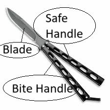
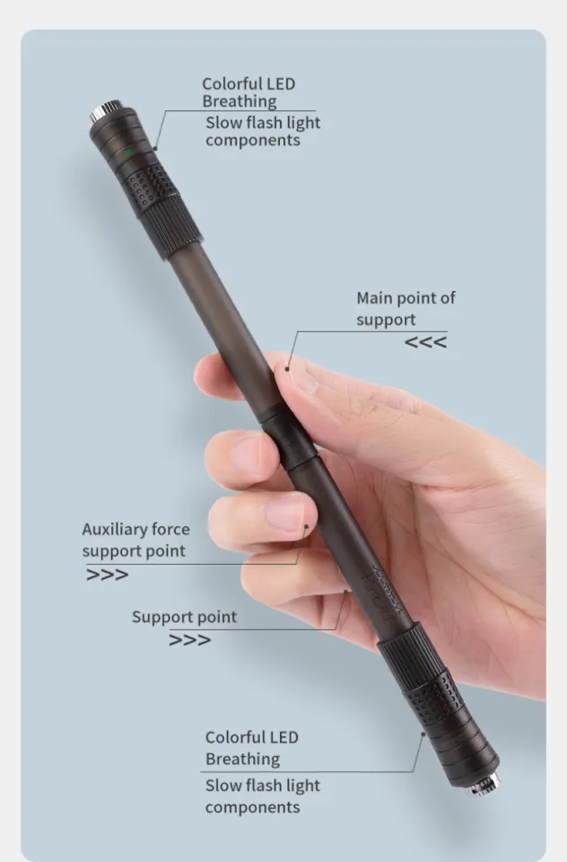

Butterfly Knife

In order to start learning tricks for the balisong, we first need to learn the simple parts of it.
There are 3 main parts that you need to know. The safe handle, the blade, and the bite handle.
The safe handle is away from the sharp edge of the blade
The blade is of course, the sharp pointy part of the knife.
And lastly, the bite handle is the part of the knife that is towards the sharp edge of the blade.
These terminologies will be used a lot while you learn how to properly use and do tricks with the butterfly knife. Another term you will sometimes hear is the open and closed position. It's just basically when the blade is out or in between the handles. The picture shown above is the open position
1. Double Rollout
The first trick you need to learn is the basic opening of the balisong. It is also sometimes referred to as the double rollout. To do this, hold the balisong in the closed position by the safe handle. You then need tilt your wrist a bit and make the bite handle swing freely. Then, flick the bite handle and the blade toward your hand, when the bite handle and blade hits the back of your hand, loosen your grip to the safe handle and make the blade do a 180, flick the blade to your hand once again and bring down the bite handle to your fingers. And there you go! That's the double rollout opening. You can just reverse the trick to close the trick.
2. Quick Draw
The quick draw is also an opening. It is also (for others) easier to do than the double rollout opening. To do the quick draw, simply hold the safe handle and let the bite handle swing freely, similar to the double rollout. The difference here is that when you swing the bite handle towards your hands, move your hands/grip a bit so that when the bite handle approaches your hand, catch it in the open position. Its that simple!
3. Y2K
Next is the Y2K or the over the thumb roll. This one is a bit tricky for beginners. To do this, you need to hold the bite handle in part close to the blade in the closed position. The end of the bite and safe handle should be in on top of your index finger and your thumb. Once you're in this position. Swing the balisong so that the safe handle goes over your thumb. Before it hits your thumb, let go of the bite handle and let the balisong roll over your finger. After the balisong rolls for a bit, catch the safe handle with your index finger and thumb, then similar to the openings, swing the bite handle towards the safe handle and catch them both so that the balisong is in the open position. And there you go! you performed the Y2K.
A lot of people (including us) had trouble learning the Y2K. I also noticed that people tend to be nervous letting go of the balisong. Remember, you NEED to let the balisong go in order for it to go around your thumb. Do not be afraid of failing and the balisong flying all over the place. That is always part of the process of learning how to do tricks with the balisong.
If you are interested in the complicated tricks, you can search the YouTube channel called Bali Tube as they have a collection of beginner, intermediate tricks, and combos
Balance Pen

You can try learning this 2 Basic Tricks for Balance Pen.
Thumb Around
Hold the pen between your thumb and index finger.
Push the pen with your middle finger, allowing it to rotate around your thumb.
Catch the pen with your index finger.
Backaround
Hold the pen between your thumb and index finger.
Push the pen with your index finger, allowing it to rotate around your thumb.
Catch the pen with your middle finger.
Fidget Spinner

1. Basic Spin Switch:
How to do it:
Hold the fidget spinner between your thumb and forefinger
with the center bearing facing up.
Start spinning it with your other hand.Once it's spinning comfortably,
use your free hand to grab one of the arms and stop its rotation.
Quickly release it, allowing the spinner to continue spinning. Repeat this process with each arm
Explanation:
The key to this trick is timing and control. As you stop and release each arm, you transfer
the momentum between the arms while maintaining the overall spin of the fidget spinner.
It creates a visually appealing effect as the spinner changes its rotation direction.
2. Tabletop Spin:
How to do it:
Start by spinning the fidget spinner on a flat surface, like a table. Once it's spinning, carefully lift one side of the spinner with your hand, creating an angle. The spinner should keep spinning on the table in an inclined position.
Explanation:
This trick relies on the stability and balance of the fidget spinner.
Lifting one side creates a slope, and the spinner continues to rotate along the table due to its momentum. It's a simple yet visually interesting trick.
Palm Transfer:
How to do it:
Hold the fidget spinner between your thumb and forefinger with the center bearing facing down.
Start spinning it.
Now, using your other hand, bring it underneath the spinning fidget spinner and gently transfer it from the first hand to the second, keeping the spinner in motion.
Explanation:
This trick involves coordination and control to smoothly transfer the spinner from one hand to the other without disrupting its spin. It adds a dynamic element to the typical spinning motion.